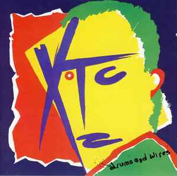

The importance of Post-Punk
A genre emerging in the mid to late 70's, Post-Punk was the result of a collective attempt from artists all over the world to push the boundaries of Punk rock music. It was often sparse, noisy and strange. Today, I will be going over some of the most important Post-Punk albums in order to provide an introduction to the genre.

Joy Division - Unknown Pleasures
This is often the album that people think of when Post-Punk is mentioned. Considered by many music fans to be the greatest album ever produced, Unknown Pleasures ecompasses all of those descriptors I used when referring to Post-Punk as a genre. It is equally parts sparse, noisy, strange and dark at various points throughout its tracklisting. The album kicks off with Disorder, one of Joy Division's most well known tracks. It's easy to see why it's so well loved, as if features all of the things most associated with the band. It starts with the steady, machine-like drumming of Stephen Morris and then comes the deep bassline from Peter Hook which few people can really match. before long, Bernard Sumner's guitar cuts into the track with a rumbling intensity all of this, creating the perfect chaotic backdrop for lead singer Ian Curtis to provide his intense vocal performance which becomes more venemous as the track increases. It's hard to describe Curtis's voice to someone who hasn't heard it before, you kind of just have to experience it yourself.
Another track worth mentioning here is the Shadowplay, Similar to Disorder, it's a track that grows in intensity as it goes on. This one again starts off with the drumming and bass playing taking priority before the guitar explodes into the track leading to an amazing guitar solo from Bernard Sumner. As with most of Joy Division songs, Ian Curtis's lyrics set the tone for the song. "In the shadowplay, acting out your own death, knowing no more
As the assassins all grouped in four lines, dancing on the floor
And with cold steel, odor on their bodies made a move to connect
But I could only stare in disbelief as the crowds all left"
Overall, this album is probably the first album anyone looking to get into Post-Punk should start with.
Gang of Four - Entertainment
After you've finished listening to Unknown Pleasures, this is the next album I would suggest you try out. It will give you a taste of a different, but equally intense Post-Punk sound. More explicitly political than Joy Division, Gang of Four were influenced by the ideas of Marx and injected that into their music. This can be seen most clearly in the lyrics to the songs Natural's Not In It
"Dream of the perfect life,
Economic circumstances
The body is good business
Sell out, maintain the interest"
Gang of were one of the main influences on the Dance Punk genre and that can be seen on this album. The basslines on this album are what really set it apart and these are shown most clearly on the most well-known track from the album Damaged Goods. It's Gang of Four's melding of danceable riffs that makes this album stand out so much, but it is not the only great thing about it. You also have Andy Gill's abrasive, glass-like guitar playing that screeches around the track and provides the perfect accompaniment to Jon King's bass playing. The best demonstration of this would have to be opening track Ether for me, but it is all over the tracks on the album.

Television - Marquee Moon
The next album is the first American album on the list. Television is a band to come out of the New York music scene of the late 70s', and it's the earliest album on the list, being released in 1977. Unlike other quite minimalist albums from the genre, Marquee Moon is a display of technical skill in terms of guitar playing. This is most evident on the over 10 minute title track from the album. It is an album which is difficult to describe and one which is best experienced rather than explained. Taking inspiration from Jazz acts, Television inject their rock riffage with all kinds of complexity.
The guitar duo of Tom Verlaine and Richard Lloyd are able to create so nuch greatness through the use of their duelling guitar techniques, both equally as talented as the other. So far, I have mentioned only the guitar element of the album, but the bass and drums also play a significant role on the album in keeping the sound together. A track like Friction would not be able to hold together without the support of the great bass playing and drumming of Fred Smith and Billy Ficca.
To summarise, this album is definitely one to check out. It's considered a classic on the Post-Punk cannon for a reason and one that has blown the minds of many first time listeners.
XTC - Drums and Wires
Back to England now for the final entry, it's an album from one of my favourite bands XTC. Arriving in 1979, Drums and Wires is an album which blends the experinental sound of Post-Punk with a sleeker pop sound. This kind of sound would form what was known as New Wave in the 1980s'. Simarly to the last album discussed, Drums and Wires is an album which holds together because of the skill of its four band members. The first track with mentioning on this album is the hit single Making Plans for Nigel. One of the first hits for XTC, it was not written by lead singer Andy Partridge, but bass player Colin Moulding who would continue to write somgs for the band on future albums and write many of their best. This song's most defining feature is the powerful drumming of Terry Chambers. The opening drum solo to the song is one of the most well-known aspects to the song and is one of the best uses of the gated reverb effect in music production. Other than the drums, the album also features a unique guitar effect that sets it apart from other albums of the time, even within XTC's own discography.
Elsewhere on the tracklist you have other intricate pop songs such as Ten Feet Tall and When You're Near Me I Difficulty, but the song I want to focus on here is Complicated Game. The final track on the album, Complicated Game is undoutably one of the strangest songs on the album, featuring some weird vocals from lead singer Colin Moulding. Starting in a subdued manner, the song builds in noise and intensity until it eventually becomes deranged shouting towards the end. It is a truly unique song on a very unconventional album.